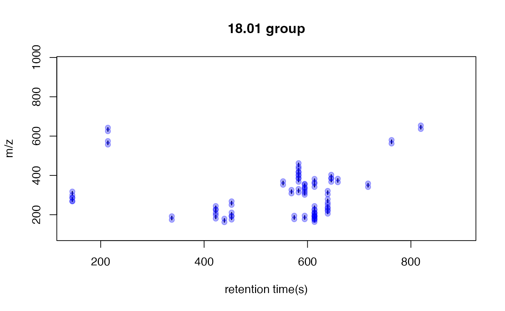
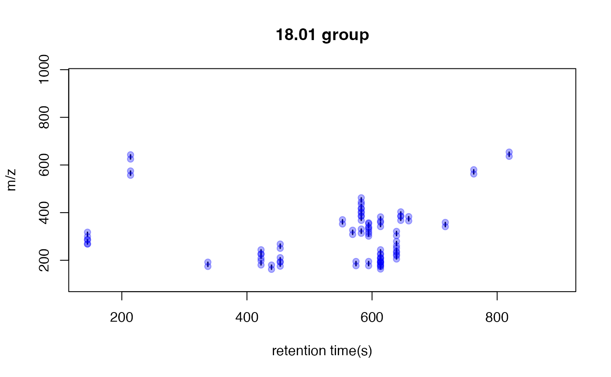
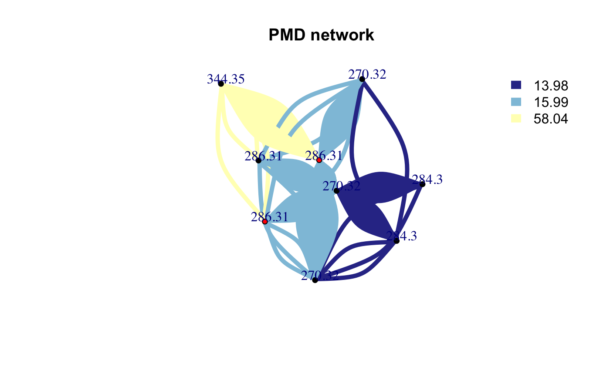
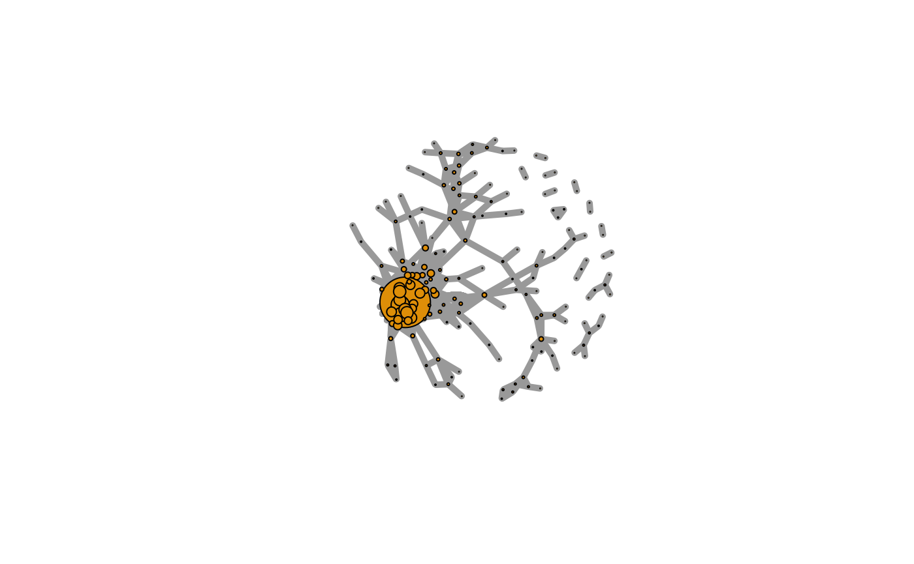

Paired Mass Distance(PMD) analysis for GC/LC-MS based non-targeted analysis
Miao Yu
2020-02-07
globalstd.RmdIntroduction of Paired Mass Distance analysis
pmd package use Paired Mass Distance (PMD) relationship to analysis the GC/LC-MS based non-targeted data. PMD means the distance between two masses or mass to charge ratios. In mass spectrometry, PMD would keep the same between two masses or two mass to charge ratios(m/z). There are twe kinds of PMD involved in this package: PMD within same retention time group and PMD from different retention time groups.
PMD within same retention time group
In GC/LC-MS based non-targeted analysis, peaks could be seperated by chromatograph. We could build retention time(RT) bins to assign peaks into different RT groups by retention time hierarchical clustering analysis. For each RT group, the peaks should come from same compounds or co-elutes. If certain PMD appeared in multiple RT groups, it would be related to the relationship about adducts, neutral loss, isotopologues or commen fragments ions.
PMD from different retention time groups
The peaks from different retention time groups would like to be different compounds seperated by chromatograph. The PMD would reflect the relationship about homologous series or chemical reactions.
GlobalStd algorithm use the PMD within same RT group to find independent peaks among certain dataset. Structure/reaction directed analysis use PMD from different RT groups to screen important compounds or reactions.
Data format
The input data should be a list object with at least two elements from a peaks list:
- mass to charge ratio with name of
mz, high resolution mass spectrometry is required - retention time with name of
rt
However, I suggested to add intensity and group information to the list for validation of PMD analysis.
In this package, a dataset from in vivo solid phase micro-extraction(SPME) was attached. This dataset contain 9 samples from 3 fish with triplicates samples for each fish. Here is the data strcture:
library(pmd)
data("spmeinvivo")
str(spmeinvivo)
#> List of 4
#> $ data : num [1:1459, 1:9] 1095 10439 10154 2797 90211 ...
#> ..- attr(*, "dimnames")=List of 2
#> .. ..$ : chr [1:1459] "100.1/170" "100.5/86" "101/85" "103.1/348" ...
#> .. ..$ : chr [1:9] "1405_Fish1_F1" "1405_Fish1_F2" "1405_Fish1_F3" "1405_Fish2_F1" ...
#> $ group: chr [1:9] "fish1" "fish1" "fish1" "fish2" ...
#> $ mz : num [1:1459] 100 101 101 103 104 ...
#> $ rt : num [1:1459] 170.2 86.3 84.9 348.1 48.8 ...You could build this list object from the xcms objects via enviGCMS package. When you have a xcmsSet object or XCMSnExp object named xset, you could use enviGCMS::getmzrt(xset) or enviGCMS::getmzrt2(xset) to get such list. Of course you could build such list by yourself.
GlobalStd algorithm
GlobalStd algorithm try to find independent peaks among certain peaks list. The first step is retention time hierarchical clustering analysis. The second step is to find the relationship among adducts, neutral loss, isotopologues and commen fragments ions. The third step is to screen the independent peaks.
Retention time hierarchical clustering
pmd <- getpaired(spmeinvivo, rtcutoff = 10, ng = 10)
#> 75 retention time cluster found.
#> 380 paired masses found
#> 9 unique within RT clusters high frequency PMD(s) used for further investigation.
#> 719 isotopologue(s) related paired mass found.
#> 492 multi-charger(s) related paired mass found.
plotrtg(pmd)
This plot would show the distribution of RT groups. The rtcutoff in function getpaired could be used to set the cutoff of the distances in retention time hierarchical clustering analysis.
Relationship among adducts, neutral loss, isotopologues and commen fragments ions
The ng in function getpaired could be used to set cutoff of global PMD’s retention time group numbers. If ng is 10, at least 10 of the retention time groups should contain the shown PMD relationship. You could use plotpaired to show the distribution.

You could also show the distribution of PMD relationship by index:
# show the unique PMD found by getpaired function
for(i in 1:length(unique(pmd$paired$diff2))){
diff <- unique(pmd$paired$diff2)[i]
index <- pmd$paired$diff2 == diff
plotpaired(pmd,index)
}


 



Screen the independent peaks
You could use getstd function to get the independent peaks.
std <- getstd(pmd)
#> 8 retention group(s) have single peaks. 14 23 32 33 54 55 56 75
#> 11 group(s) with multiple peaks while no isotope/paired relationship 4 5 7 8 11 41 42 49 68 72 73
#> 9 group(s) with multiple peaks with isotope without paired relationship 2 9 22 26 52 62 64 66 70
#> 4 group(s) with paired relationship without isotope 1 10 15 18
#> 43 group(s) with paired relationship and isotope 3 6 12 13 16 17 19 20 21 24 25 27 28 29 30 31 34 35 36 37 38 39 40 43 44 45 46 47 48 50 51 53 57 58 59 60 61 63 65 67 69 71 74
#> 297 std mass found.Here you could plot the peaks by plotstd function to show the distribution of independent peaks:

You could also plot the peaks distribution by assign a retention time group via plotstdrt:
par(mfrow = c(2,3))
plotstdrt(std,rtcluster = 23,main = 'Retention time group 23')
plotstdrt(std,rtcluster = 9,main = 'Retention time group 9')
plotstdrt(std,rtcluster = 18,main = 'Retention time group 18')
plotstdrt(std,rtcluster = 67,main = 'Retention time group 67')
plotstdrt(std,rtcluster = 49,main = 'Retention time group 49')
plotstdrt(std,rtcluster = 6,main = 'Retention time group 6')
Use independent peaks for MS/MS validation
Independent peaks are supporsing generated from different compounds. We could use those peaks for MS/MS analysis instead of DIA or DDA. Here we need multiple injections for one sample since it might be impossible to get all ions’ fragmental ions in one injection with good sensitivity. You could use gettarget to generate the index for the injections and output the peaks for each run.
# you need retention time for independent peaks
index <- gettarget(std$rt[std$stdmassindex])
#> You need 10 injections!
# output the ions for each injection
table(index)
#> index
#> 1 2 3 4 5 6 7 8 9 10
#> 22 22 41 29 36 14 37 40 23 33
# show the ions for the first injection
std$mz[index==1]
#> [1] 120.0448 125.9874 140.0600 141.9594 145.9553 154.0586 155.1293 155.1295
#> [9] 156.9622 161.0713 161.0967 176.0305 193.1597 209.1552 209.9808 210.1577
#> [17] 211.1695 212.2026 227.1847 257.9694 258.8998 259.9651 270.3185 270.3185
#> [25] 272.0665 272.9318 273.8902 278.2482 279.2697 280.2641 282.9806 285.3002
#> [33] 285.3002 303.6476 311.2560 326.3060 327.0777 327.2022 327.3449 328.8778
#> [41] 338.3415 367.2694 367.3373 368.3395 383.3313 385.3480 394.8754 396.3661
#> [49] 399.1231 401.3421 403.2859 403.3586 406.2928 411.1725 412.8751 429.8709
#> [57] 444.3844 460.3112 462.8615 463.1472 463.3975 468.3078 494.8112 538.3435
#> [65] 539.1646 540.8890 559.5175 561.4023 568.8923 570.3465 575.4280 580.1907
#> [73] 581.1925 581.3659 585.4215 594.3765 596.1559 623.4241 647.4366 669.3724
#> [81] 670.4222 673.8481 674.5057 676.2120 691.6443 739.6479 741.8363 750.6089
#> [89] 772.6492 775.6016 789.5260 791.1193 792.3470 798.3265 801.4967 802.5006
#> [97] 806.8262 816.1771 819.3943 854.8122 873.8334 897.2942 901.8120 903.8164
#> [105] 904.8150 907.4933 930.1575
std$rt[index==1]
#> [1] 511.7220 1079.6500 511.0515 1079.4300 85.3855 212.6560 775.8610
#> [8] 785.8260 145.5380 389.9630 490.7225 166.9580 614.2000 611.4120
#> [15] 48.4200 611.4130 614.6250 594.4850 416.3200 146.3970 217.2010
#> [22] 145.9660 501.6500 781.4320 141.0400 145.7540 145.9680 559.5550
#> [29] 639.1000 576.6950 146.0980 504.4370 564.8035 510.2230 585.6975
#> [36] 570.2690 559.9820 170.3860 647.4575 144.2610 614.9465 382.6770
#> [43] 585.2700 644.2430 656.0300 585.4825 217.1550 594.2690 527.9020
#> [50] 632.8410 570.0540 585.8040 610.9840 621.1625 144.2540 145.2170
#> [57] 582.4815 169.9670 217.1550 717.0775 582.3755 491.1510 817.9060
#> [64] 537.2240 762.7890 213.7260 705.7430 546.8030 213.7270 510.2220
#> [71] 213.0735 762.3610 762.4690 533.7950 434.7490 561.2680 819.5150
#> [78] 455.1505 527.7950 213.5285 527.7930 214.3560 468.4360 819.4080
#> [85] 594.0560 639.1005 214.1480 624.2710 613.6620 639.3140 730.8590
#> [92] 639.9560 213.4660 213.7260 520.0790 519.6610 213.6270 213.3340
#> [99] 467.2110 215.4170 213.5090 215.8710 214.3740 213.5020 213.3595
#> [106] 213.0430 213.5310Validation by principal components analysis(PCA)
You need to check the GlobalStd algorithm’s results by principal components analysis(PCA).
library(enviGCMS)
par(mfrow = c(1,2),mar = c(4,4,2,1)+0.1)
plotpca(std$data,lv = as.numeric(as.factor(std$group)),main = substitute(paste(italic('in vivo'), " SPME samples(all peaks)")))
plotpca(std$data[std$stdmassindex,],lv = as.numeric(as.factor(std$group)),main = substitute(paste(italic('in vivo'), " SPME samples(selected peaks)")))
Comparision with other packages
GlobalStd algorithm in pmd package could be treated as a method to extract pseudospectra. You could use getcluster to get peaks groups information for all GlobalStd peaks. This function would consider the merge of GlobalStd peaks when certain peak is involved in multiple clusters. Then you could choose export peaks with the highest intensities in each GlobalStd merged peaks groups.
stdcluster <- getcluster(std)
# extract pseudospectra for std peak 71
idx <- unique(stdcluster$cluster$largei[stdcluster$cluster$i==71])
plot(stdcluster$cluster$mz[stdcluster$cluster$largei==idx],stdcluster$cluster$ins[stdcluster$cluster$largei==idx],type = 'h',xlab = 'm/z',ylab = 'intensity',main = 'pseudospectra for GlobalStd peak 71')
# export peaks with the highest intensities in each GlobalStd peaks groups.
data <- stdcluster$data[stdcluster$stdmassindex2,]You could also use getcorcluster to find peaks groups by correlation analysis only.
corcluster <- getcorcluster(spmeinvivo)
#> 75 retention time cluster found.
par(mfrow = c(1,3),mar = c(4,4,2,1)+0.1)
plotpca(std$data,lv = as.numeric(as.factor(std$group)),main = substitute(paste(italic('in vivo'), " SPME samples(all peaks)")))
plotpca(std$data[std$stdmassindex,],lv = as.numeric(as.factor(std$group)),main = substitute(paste(italic('in vivo'), " SPME samples(selected peaks)")))
plotpca(std$data[corcluster$stdmassindex,],lv = as.numeric(as.factor(std$group)),main = substitute(paste(italic('in vivo'), " SPME samples(selected peaks by correlationship)")))
GlobalStd algorithm with intensity data
GlobalStd algorithm is designed to analysis data without intensity data. However, if you have intensity data, the independant peaks could be selected with more confindence. You could set up cutoff of Pearson Correlation Coefficient between peaks to refine the peaks selected by GlobalStd within same retention time groups.
std2 <- getstd(pmd,corcutoff = 0.9)
#> 8 retention group(s) have single peaks. 14 23 32 33 54 55 56 75
#> 23 group(s) with multiple peaks while no isotope/paired relationship 2 4 5 7 8 10 11 15 18 26 35 39 41 42 49 50 59 62 68 69 70 72 73
#> 14 group(s) with multiple peaks with isotope without paired relationship 9 12 22 24 27 28 34 51 52 57 60 64 66 71
#> 3 group(s) with paired relationship without isotope 1 53 74
#> 27 group(s) with paired relationship and isotope 3 6 13 16 17 19 20 21 25 29 30 31 36 37 38 40 43 44 45 46 47 48 58 61 63 65 67
#> 120 std mass found.
par(mfrow = c(1,3),mar = c(4,4,2,1)+0.1)
plotpca(std2$data,lv = as.numeric(as.factor(std2$group)),main = substitute(paste(italic('in vivo'), " SPME samples(all peaks)")))
plotpca(std$data[std$stdmassindex,],lv = as.numeric(as.factor(std$group)),main = substitute(paste(italic('in vivo'), " SPME samples(selected peaks)")))
plotpca(std2$data[std2$stdmassindex,],lv = as.numeric(as.factor(std2$group)),main = substitute(paste(italic('in vivo'), " SPME samples(selected peaks)")))
Structure/Reaction directed analysis
getsda function could be used to perform Structure/reaction directed analysis. The cutoff of freqency is automately found by PMD network analysis with most cluster numbers.
sda <- getsda(std)
#> PMD frequency cutoff is 9 by PMD network analysis with 23 clusters.
#> 21 groups were found as high frequency PMD group.
#> 0 was found as high frequency PMD.
#> 1.98 was found as high frequency PMD.
#> 2.02 was found as high frequency PMD.
#> 12 was found as high frequency PMD.
#> 13.98 was found as high frequency PMD.
#> 14.02 was found as high frequency PMD.
#> 14.05 was found as high frequency PMD.
#> 15.99 was found as high frequency PMD.
#> 16.03 was found as high frequency PMD.
#> 28.03 was found as high frequency PMD.
#> 30.05 was found as high frequency PMD.
#> 42.05 was found as high frequency PMD.
#> 49.02 was found as high frequency PMD.
#> 58.04 was found as high frequency PMD.
#> 66.05 was found as high frequency PMD.
#> 68.06 was found as high frequency PMD.
#> 74.02 was found as high frequency PMD.
#> 82.08 was found as high frequency PMD.
#> 88.05 was found as high frequency PMD.
#> 116.08 was found as high frequency PMD.
#> 126.14 was found as high frequency PMD.You could use plotstdsda to show the distribution of the selected paired peaks.
You could also use index to show the distribution of certain PMDs.
par(mfrow = c(2,3),mar = c(4,4,2,1)+0.1)
plotstdsda(sda,sda$sda$diff2 == 2.02)
plotstdsda(sda,sda$sda$diff2 == 13.98)
plotstdsda(sda,sda$sda$diff2 == 15.99)
plotstdsda(sda,sda$sda$diff2 == 14.02)
plotstdsda(sda,sda$sda$diff2 == 28.03)
plotstdsda(sda,sda$sda$diff2 == 58.04)
Structure/reaction directed analysis could be directily performed on all the peaks, which is slow to process:
sdaall <- getsda(spmeinvivo)
#> PMD frequency cutoff is 52 by PMD network analysis with 5 clusters.
#> 345 groups were found as high frequency PMD group.
#> 0 was found as high frequency PMD.
#> 1 was found as high frequency PMD.
#> 1.01 was found as high frequency PMD.
#> 1.94 was found as high frequency PMD.
#> 1.98 was found as high frequency PMD.
#> 2.01 was found as high frequency PMD.
#> 2.02 was found as high frequency PMD.
#> 2.98 was found as high frequency PMD.
#> 3.01 was found as high frequency PMD.
#> 3.02 was found as high frequency PMD.
#> 3.96 was found as high frequency PMD.
#> 3.98 was found as high frequency PMD.
#> 3.99 was found as high frequency PMD.
#> 4.03 was found as high frequency PMD.
#> 4.96 was found as high frequency PMD.
#> 4.98 was found as high frequency PMD.
#> 4.99 was found as high frequency PMD.
#> 5.03 was found as high frequency PMD.
#> 5.95 was found as high frequency PMD.
#> 5.96 was found as high frequency PMD.
#> 5.97 was found as high frequency PMD.
#> 5.99 was found as high frequency PMD.
#> 6.01 was found as high frequency PMD.
#> 6.05 was found as high frequency PMD.
#> 6.96 was found as high frequency PMD.
#> 6.97 was found as high frequency PMD.
#> 7.01 was found as high frequency PMD.
#> 7.97 was found as high frequency PMD.
#> 8.02 was found as high frequency PMD.
#> 8.99 was found as high frequency PMD.
#> 9.01 was found as high frequency PMD.
#> 9.02 was found as high frequency PMD.
#> 9.03 was found as high frequency PMD.
#> 10.02 was found as high frequency PMD.
#> 10.04 was found as high frequency PMD.
#> 10.06 was found as high frequency PMD.
#> 11 was found as high frequency PMD.
#> 11.02 was found as high frequency PMD.
#> 11.04 was found as high frequency PMD.
#> 11.96 was found as high frequency PMD.
#> 12 was found as high frequency PMD.
#> 12.04 was found as high frequency PMD.
#> 12.97 was found as high frequency PMD.
#> 12.98 was found as high frequency PMD.
#> 13 was found as high frequency PMD.
#> 13.01 was found as high frequency PMD.
#> 13.05 was found as high frequency PMD.
#> 13.98 was found as high frequency PMD.
#> 13.99 was found as high frequency PMD.
#> 14.01 was found as high frequency PMD.
#> 14.02 was found as high frequency PMD.
#> 14.05 was found as high frequency PMD.
#> 14.96 was found as high frequency PMD.
#> 14.98 was found as high frequency PMD.
#> 14.99 was found as high frequency PMD.
#> 15.01 was found as high frequency PMD.
#> 15.02 was found as high frequency PMD.
#> 15.05 was found as high frequency PMD.
#> 15.99 was found as high frequency PMD.
#> 16 was found as high frequency PMD.
#> 16.02 was found as high frequency PMD.
#> 16.03 was found as high frequency PMD.
#> 16.07 was found as high frequency PMD.
#> 16.99 was found as high frequency PMD.
#> 17 was found as high frequency PMD.
#> 17.03 was found as high frequency PMD.
#> 17.94 was found as high frequency PMD.
#> 17.97 was found as high frequency PMD.
#> 18 was found as high frequency PMD.
#> 18.01 was found as high frequency PMD.
#> 19.01 was found as high frequency PMD.
#> 19.04 was found as high frequency PMD.
#> 19.97 was found as high frequency PMD.
#> 19.99 was found as high frequency PMD.
#> 20.06 was found as high frequency PMD.
#> 20.97 was found as high frequency PMD.
#> 20.99 was found as high frequency PMD.
#> 21.06 was found as high frequency PMD.
#> 21.98 was found as high frequency PMD.
#> 22.04 was found as high frequency PMD.
#> 22.99 was found as high frequency PMD.
#> 23 was found as high frequency PMD.
#> 23.04 was found as high frequency PMD.
#> 24 was found as high frequency PMD.
#> 24.04 was found as high frequency PMD.
#> 25 was found as high frequency PMD.
#> 25.01 was found as high frequency PMD.
#> 25.02 was found as high frequency PMD.
#> 25.05 was found as high frequency PMD.
#> 25.06 was found as high frequency PMD.
#> 25.98 was found as high frequency PMD.
#> 26.01 was found as high frequency PMD.
#> 26.02 was found as high frequency PMD.
#> 26.03 was found as high frequency PMD.
#> 26.05 was found as high frequency PMD.
#> 27.02 was found as high frequency PMD.
#> 27.03 was found as high frequency PMD.
#> 27.04 was found as high frequency PMD.
#> 27.99 was found as high frequency PMD.
#> 28.03 was found as high frequency PMD.
#> 28.98 was found as high frequency PMD.
#> 28.99 was found as high frequency PMD.
#> 29 was found as high frequency PMD.
#> 29.03 was found as high frequency PMD.
#> 29.04 was found as high frequency PMD.
#> 29.97 was found as high frequency PMD.
#> 30.01 was found as high frequency PMD.
#> 30.04 was found as high frequency PMD.
#> 30.05 was found as high frequency PMD.
#> 30.08 was found as high frequency PMD.
#> 30.99 was found as high frequency PMD.
#> 31.01 was found as high frequency PMD.
#> 31.04 was found as high frequency PMD.
#> 31.05 was found as high frequency PMD.
#> 31.99 was found as high frequency PMD.
#> 32.01 was found as high frequency PMD.
#> 32.02 was found as high frequency PMD.
#> 32.05 was found as high frequency PMD.
#> 32.06 was found as high frequency PMD.
#> 32.1 was found as high frequency PMD.
#> 32.99 was found as high frequency PMD.
#> 33 was found as high frequency PMD.
#> 33.02 was found as high frequency PMD.
#> 33.03 was found as high frequency PMD.
#> 33.06 was found as high frequency PMD.
#> 34 was found as high frequency PMD.
#> 34.01 was found as high frequency PMD.
#> 34.03 was found as high frequency PMD.
#> 34.97 was found as high frequency PMD.
#> 35.01 was found as high frequency PMD.
#> 35.04 was found as high frequency PMD.
#> 35.96 was found as high frequency PMD.
#> 35.97 was found as high frequency PMD.
#> 36 was found as high frequency PMD.
#> 36.02 was found as high frequency PMD.
#> 36.04 was found as high frequency PMD.
#> 36.06 was found as high frequency PMD.
#> 36.97 was found as high frequency PMD.
#> 37.02 was found as high frequency PMD.
#> 37.06 was found as high frequency PMD.
#> 37.98 was found as high frequency PMD.
#> 38.02 was found as high frequency PMD.
#> 38.03 was found as high frequency PMD.
#> 38.98 was found as high frequency PMD.
#> 39.03 was found as high frequency PMD.
#> 39.07 was found as high frequency PMD.
#> 39.99 was found as high frequency PMD.
#> 40.03 was found as high frequency PMD.
#> 40.07 was found as high frequency PMD.
#> 41.02 was found as high frequency PMD.
#> 41.04 was found as high frequency PMD.
#> 42.01 was found as high frequency PMD.
#> 42.05 was found as high frequency PMD.
#> 42.08 was found as high frequency PMD.
#> 42.12 was found as high frequency PMD.
#> 43.01 was found as high frequency PMD.
#> 43.02 was found as high frequency PMD.
#> 43.04 was found as high frequency PMD.
#> 43.05 was found as high frequency PMD.
#> 43.06 was found as high frequency PMD.
#> 43.99 was found as high frequency PMD.
#> 44.03 was found as high frequency PMD.
#> 44.06 was found as high frequency PMD.
#> 45.03 was found as high frequency PMD.
#> 45.06 was found as high frequency PMD.
#> 46 was found as high frequency PMD.
#> 46.04 was found as high frequency PMD.
#> 47 was found as high frequency PMD.
#> 47.04 was found as high frequency PMD.
#> 47.07 was found as high frequency PMD.
#> 48 was found as high frequency PMD.
#> 48.04 was found as high frequency PMD.
#> 48.95 was found as high frequency PMD.
#> 48.98 was found as high frequency PMD.
#> 49 was found as high frequency PMD.
#> 49.02 was found as high frequency PMD.
#> 50 was found as high frequency PMD.
#> 50.02 was found as high frequency PMD.
#> 51 was found as high frequency PMD.
#> 51.03 was found as high frequency PMD.
#> 51.99 was found as high frequency PMD.
#> 52.03 was found as high frequency PMD.
#> 52.07 was found as high frequency PMD.
#> 53.03 was found as high frequency PMD.
#> 53.04 was found as high frequency PMD.
#> 53.05 was found as high frequency PMD.
#> 54.03 was found as high frequency PMD.
#> 54.05 was found as high frequency PMD.
#> 54.08 was found as high frequency PMD.
#> 55.05 was found as high frequency PMD.
#> 55.06 was found as high frequency PMD.
#> 55.99 was found as high frequency PMD.
#> 56.03 was found as high frequency PMD.
#> 56.06 was found as high frequency PMD.
#> 56.1 was found as high frequency PMD.
#> 57.04 was found as high frequency PMD.
#> 57.06 was found as high frequency PMD.
#> 57.07 was found as high frequency PMD.
#> 58.01 was found as high frequency PMD.
#> 58.04 was found as high frequency PMD.
#> 58.08 was found as high frequency PMD.
#> 59.04 was found as high frequency PMD.
#> 59.05 was found as high frequency PMD.
#> 59.08 was found as high frequency PMD.
#> 60.02 was found as high frequency PMD.
#> 60.05 was found as high frequency PMD.
#> 60.08 was found as high frequency PMD.
#> 60.13 was found as high frequency PMD.
#> 61.05 was found as high frequency PMD.
#> 62 was found as high frequency PMD.
#> 62.02 was found as high frequency PMD.
#> 62.05 was found as high frequency PMD.
#> 63 was found as high frequency PMD.
#> 63.07 was found as high frequency PMD.
#> 63.99 was found as high frequency PMD.
#> 64 was found as high frequency PMD.
#> 64.03 was found as high frequency PMD.
#> 64.07 was found as high frequency PMD.
#> 65 was found as high frequency PMD.
#> 65.02 was found as high frequency PMD.
#> 66.01 was found as high frequency PMD.
#> 66.02 was found as high frequency PMD.
#> 66.05 was found as high frequency PMD.
#> 67.03 was found as high frequency PMD.
#> 68.03 was found as high frequency PMD.
#> 68.06 was found as high frequency PMD.
#> 68.1 was found as high frequency PMD.
#> 70.04 was found as high frequency PMD.
#> 70.06 was found as high frequency PMD.
#> 70.08 was found as high frequency PMD.
#> 70.15 was found as high frequency PMD.
#> 71.06 was found as high frequency PMD.
#> 72.02 was found as high frequency PMD.
#> 72.06 was found as high frequency PMD.
#> 72.09 was found as high frequency PMD.
#> 73.02 was found as high frequency PMD.
#> 74.02 was found as high frequency PMD.
#> 74.04 was found as high frequency PMD.
#> 74.07 was found as high frequency PMD.
#> 74.11 was found as high frequency PMD.
#> 75.02 was found as high frequency PMD.
#> 75.04 was found as high frequency PMD.
#> 75.07 was found as high frequency PMD.
#> 76.02 was found as high frequency PMD.
#> 76.03 was found as high frequency PMD.
#> 76.05 was found as high frequency PMD.
#> 77.05 was found as high frequency PMD.
#> 80.02 was found as high frequency PMD.
#> 80.03 was found as high frequency PMD.
#> 80.06 was found as high frequency PMD.
#> 80.1 was found as high frequency PMD.
#> 81.03 was found as high frequency PMD.
#> 82.04 was found as high frequency PMD.
#> 82.08 was found as high frequency PMD.
#> 83.05 was found as high frequency PMD.
#> 84.02 was found as high frequency PMD.
#> 84.06 was found as high frequency PMD.
#> 84.09 was found as high frequency PMD.
#> 85.1 was found as high frequency PMD.
#> 86.07 was found as high frequency PMD.
#> 86.11 was found as high frequency PMD.
#> 88.05 was found as high frequency PMD.
#> 88.18 was found as high frequency PMD.
#> 89.05 was found as high frequency PMD.
#> 90.05 was found as high frequency PMD.
#> 90.14 was found as high frequency PMD.
#> 91.03 was found as high frequency PMD.
#> 91.1 was found as high frequency PMD.
#> 92.03 was found as high frequency PMD.
#> 92.13 was found as high frequency PMD.
#> 94.04 was found as high frequency PMD.
#> 94.08 was found as high frequency PMD.
#> 94.1 was found as high frequency PMD.
#> 96.02 was found as high frequency PMD.
#> 96.09 was found as high frequency PMD.
#> 97.07 was found as high frequency PMD.
#> 98.07 was found as high frequency PMD.
#> 98.11 was found as high frequency PMD.
#> 99.08 was found as high frequency PMD.
#> 100.16 was found as high frequency PMD.
#> 102.07 was found as high frequency PMD.
#> 102.14 was found as high frequency PMD.
#> 103.1 was found as high frequency PMD.
#> 104.06 was found as high frequency PMD.
#> 105.08 was found as high frequency PMD.
#> 105.12 was found as high frequency PMD.
#> 106.04 was found as high frequency PMD.
#> 108.13 was found as high frequency PMD.
#> 109.15 was found as high frequency PMD.
#> 110.07 was found as high frequency PMD.
#> 110.11 was found as high frequency PMD.
#> 110.15 was found as high frequency PMD.
#> 112.09 was found as high frequency PMD.
#> 112.13 was found as high frequency PMD.
#> 112.16 was found as high frequency PMD.
#> 114.14 was found as high frequency PMD.
#> 115.08 was found as high frequency PMD.
#> 115.14 was found as high frequency PMD.
#> 116.08 was found as high frequency PMD.
#> 117.09 was found as high frequency PMD.
#> 119.06 was found as high frequency PMD.
#> 120.06 was found as high frequency PMD.
#> 121.06 was found as high frequency PMD.
#> 122.04 was found as high frequency PMD.
#> 122.15 was found as high frequency PMD.
#> 126.1 was found as high frequency PMD.
#> 126.14 was found as high frequency PMD.
#> 127.14 was found as high frequency PMD.
#> 128.12 was found as high frequency PMD.
#> 128.16 was found as high frequency PMD.
#> 130.1 was found as high frequency PMD.
#> 131.1 was found as high frequency PMD.
#> 132.08 was found as high frequency PMD.
#> 133.15 was found as high frequency PMD.
#> 138.14 was found as high frequency PMD.
#> 139.14 was found as high frequency PMD.
#> 140.16 was found as high frequency PMD.
#> 141.16 was found as high frequency PMD.
#> 142.14 was found as high frequency PMD.
#> 145.04 was found as high frequency PMD.
#> 145.15 was found as high frequency PMD.
#> 145.18 was found as high frequency PMD.
#> 146.04 was found as high frequency PMD.
#> 147.09 was found as high frequency PMD.
#> 155.17 was found as high frequency PMD.
#> 156.15 was found as high frequency PMD.
#> 157.15 was found as high frequency PMD.
#> 159.16 was found as high frequency PMD.
#> 161.18 was found as high frequency PMD.
#> 164.16 was found as high frequency PMD.
#> 166.17 was found as high frequency PMD.
#> 168.19 was found as high frequency PMD.
#> 171.2 was found as high frequency PMD.
#> 173.15 was found as high frequency PMD.
#> 173.18 was found as high frequency PMD.
#> 174.13 was found as high frequency PMD.
#> 175.13 was found as high frequency PMD.
#> 175.16 was found as high frequency PMD.
#> 176.16 was found as high frequency PMD.
#> 191.15 was found as high frequency PMD.
#> 192.19 was found as high frequency PMD.
#> 208.18 was found as high frequency PMD.
#> 210.2 was found as high frequency PMD.
#> 266.25 was found as high frequency PMD.
#> 290.21 was found as high frequency PMD.
par(mfrow = c(2,3),mar = c(4,4,2,1)+0.1)
plotstdsda(sdaall,sdaall$sda$diff2 == 2.02)
plotstdsda(sdaall,sdaall$sda$diff2 == 13.98)
plotstdsda(sdaall,sdaall$sda$diff2 == 15.99)
plotstdsda(sdaall,sdaall$sda$diff2 == 14.02)
plotstdsda(sdaall,sdaall$sda$diff2 == 28.03)
plotstdsda(sdaall,sdaall$sda$diff2 == 58.04)
Structure/reaction directed analysis for peaks/compounds only
When you only have data of peaks without retention time or compounds list, structure/reaction directed analysis could also be done by getrda function.
Structure/Reaction Network
One peak or compounds could be involved in multiple reactions. You could construct a network by such relationship.
If you have a specific compound and want to check the metabolites of certain PMD, you could use getchain to extract the network of that compounds
library(igraph)
#>
#> Attaching package: 'igraph'
#> The following objects are masked from 'package:stats':
#>
#> decompose, spectrum
#> The following object is masked from 'package:base':
#>
#> union
# check metabolites of C18H39NO
chain <- getchain(spmeinvivo,diff = c(2.02,14.02,15.99,58.04,13.98),mass = 286.3101,digits = 2,corcutoff = 0)
# show as network
net <- graph_from_data_frame(chain$sdac,directed = F)
pal <- (grDevices::colorRampPalette(rev(RColorBrewer::brewer.pal(11,"RdYlBu")
)))(5)
plot(net,vertex.label=round(as.numeric(V(net)$name),2),vertex.size =5,edge.width = 5,edge.color = pal[as.numeric(as.factor(E(net)$diff2))],vertex.label.dist=1,vertex.color=ifelse(round(as.numeric(V(net)$name),4) %in% 286.3101,'red','black'),main = 'PMD network')
legend("topright",bty = "n",
legend=unique(E(net)$diff2),
fill=unique(pal[as.numeric(as.factor(E(net)$diff2))]), border=NA,horiz = F)
If you want to see all the independant peaks’ high frequency PMDs as a network, the following code will help
sda <- getsda(std)
#> PMD frequency cutoff is 9 by PMD network analysis with 23 clusters.
#> 21 groups were found as high frequency PMD group.
#> 0 was found as high frequency PMD.
#> 1.98 was found as high frequency PMD.
#> 2.02 was found as high frequency PMD.
#> 12 was found as high frequency PMD.
#> 13.98 was found as high frequency PMD.
#> 14.02 was found as high frequency PMD.
#> 14.05 was found as high frequency PMD.
#> 15.99 was found as high frequency PMD.
#> 16.03 was found as high frequency PMD.
#> 28.03 was found as high frequency PMD.
#> 30.05 was found as high frequency PMD.
#> 42.05 was found as high frequency PMD.
#> 49.02 was found as high frequency PMD.
#> 58.04 was found as high frequency PMD.
#> 66.05 was found as high frequency PMD.
#> 68.06 was found as high frequency PMD.
#> 74.02 was found as high frequency PMD.
#> 82.08 was found as high frequency PMD.
#> 88.05 was found as high frequency PMD.
#> 116.08 was found as high frequency PMD.
#> 126.14 was found as high frequency PMD.
df <- sda$sda
net <- graph_from_data_frame(df,directed = F)
pal <- (grDevices::colorRampPalette(rev(RColorBrewer::brewer.pal(11,"RdYlBu")
)))(length(unique(E(net)$diff2)))
plot(net,vertex.label=round(as.numeric(V(net)$name)),vertex.size = 7,edge.width = 5,edge.color = pal[as.numeric(as.factor(E(net)$diff2))],main = 'PMD network')
legend("topright",bty = "n",
legend=unique(E(net)$diff2),
fill=unique(pal[as.numeric(as.factor(E(net)$diff2))]), border=NA,horiz = F)
# Check the degree of the nodes
# Show the degree distribution of the vertices
deg <- degree(net, mode="all")
degree_distribution(net)
#> [1] 0.000000000 0.314685315 0.244755245 0.090909091 0.083916084 0.048951049
#> [7] 0.041958042 0.055944056 0.027972028 0.020979021 0.034965035 0.006993007
#> [13] 0.000000000 0.006993007 0.000000000 0.000000000 0.013986014 0.000000000
#> [19] 0.000000000 0.000000000 0.000000000 0.000000000 0.000000000 0.000000000
#> [25] 0.000000000 0.000000000 0.000000000 0.000000000 0.000000000 0.000000000
#> [31] 0.000000000 0.000000000 0.000000000 0.000000000 0.000000000 0.000000000
#> [37] 0.000000000 0.000000000 0.000000000 0.000000000 0.000000000 0.000000000
#> [43] 0.000000000 0.000000000 0.000000000 0.000000000 0.000000000 0.000000000
#> [49] 0.006993007
plot(net, vertex.size=deg/2,vertex.label=NA,vertex.size = 7, edge.width = 5)
# network community structure detection
ceb <- cluster_edge_betweenness(net,weights = abs(E(net)$cor), directed = F)
#> Warning in cluster_edge_betweenness(net, weights = abs(E(net)$cor), directed =
#> F): At community.c:460 :Membership vector will be selected based on the lowest
#> modularity score.
#> Warning in cluster_edge_betweenness(net, weights = abs(E(net)$cor), directed =
#> F): At community.c:467 :Modularity calculation with weighted edge betweenness
#> community detection might not make sense -- modularity treats edge weights as
#> similarities while edge betwenness treats them as distances
plot(ceb, net,vertex.label=NA,) 
Parameters selection
Retention time cluster cutoff should fit the peak picking algorithm. For HPLC, 10 is suggested and 5 could be used for UPLC.
Global PMD’s retention time group numbers should be around 20 percent of the retention time cluster numbers. For example, if you find 100 retention time clusters, I suggested you use 20 as the empirical global PMD’s retention time group numbers.
Another important hint is that pre-filter your peak list by black samples or other quality control samples. Otherwise the running time would be long and lots of pmd relationship would be just from noise.
Wrap function
globalstd function is a wrap funtion to process GlobalStd algorithm and structure/reaction directed analysis in one line. All the plot function could be directly used on the list objects from globalstd function.
result <- globalstd(spmeinvivo,ng=10)
#> 75 retention time cluster found.
#> 380 paired masses found
#> 9 unique within RT clusters high frequency PMD(s) used for further investigation.
#> 719 isotopologue(s) related paired mass found.
#> 492 multi-charger(s) related paired mass found.
#> 8 retention group(s) have single peaks. 14 23 32 33 54 55 56 75
#> 11 group(s) with multiple peaks while no isotope/paired relationship 4 5 7 8 11 41 42 49 68 72 73
#> 9 group(s) with multiple peaks with isotope without paired relationship 2 9 22 26 52 62 64 66 70
#> 4 group(s) with paired relationship without isotope 1 10 15 18
#> 43 group(s) with paired relationship and isotope 3 6 12 13 16 17 19 20 21 24 25 27 28 29 30 31 34 35 36 37 38 39 40 43 44 45 46 47 48 50 51 53 57 58 59 60 61 63 65 67 69 71 74
#> 297 std mass found.
#> PMD frequency cutoff is 9 by PMD network analysis with 23 clusters.
#> 21 groups were found as high frequency PMD group.
#> 0 was found as high frequency PMD.
#> 1.98 was found as high frequency PMD.
#> 2.02 was found as high frequency PMD.
#> 12 was found as high frequency PMD.
#> 13.98 was found as high frequency PMD.
#> 14.02 was found as high frequency PMD.
#> 14.05 was found as high frequency PMD.
#> 15.99 was found as high frequency PMD.
#> 16.03 was found as high frequency PMD.
#> 28.03 was found as high frequency PMD.
#> 30.05 was found as high frequency PMD.
#> 42.05 was found as high frequency PMD.
#> 49.02 was found as high frequency PMD.
#> 58.04 was found as high frequency PMD.
#> 66.05 was found as high frequency PMD.
#> 68.06 was found as high frequency PMD.
#> 74.02 was found as high frequency PMD.
#> 82.08 was found as high frequency PMD.
#> 88.05 was found as high frequency PMD.
#> 116.08 was found as high frequency PMD.
#> 126.14 was found as high frequency PMD.Shiny application
An interactive document has been included in this package to perform PMD analysis. You need to prepare a csv file with m/z and retention time of peaks. Such csv file could be generated by run enviGCMS::getmzrtcsv() on the list object from enviGCMS::getmzrt(xset) or enviGCMS::getmzrt2(xset) function. You could also generate the csv file by enviGCMS::getmzrt(xset,name = 'test') or enviGCMS::getmzrt2(xset, name = 'test'). You will find the csv file in the working dictionary named test.csv.
Then you could run runPMD() to start the Graphical user interface(GUI) for GlobalStd algorithm and structure/reaction directed analysis. The PMD network for certain compound could be generated by run runPMDnet().
Database
To check the pmd reaction database:
# all reaction
data("omics")
head(omics)
#> KEGG RHEA_ID DIRECTION MASTER_ID ec ecocyc macie metacyc
#> 1 R00001 22455 BI 22452 NA <NA> NA ENDOPOLYPHOSPHATASE-RXN
#> 2 R00004 24579 BI 24576 NA <NA> NA INORGPYROPHOSPHAT-RXN
#> 3 R00005 19032 BI 19029 NA <NA> NA <NA>
#> 4 R00005 19032 BI 19029 NA <NA> NA <NA>
#> 5 R00006 20504 BI 20501 NA <NA> NA <NA>
#> 6 R00008 22751 BI 22748 NA <NA> NA <NA>
#> reactome compounds pmd pmd2
#> 1 NA [phosphate](n+1) + n H2O <=> n H(+) + (n+1) phosphate NA NA
#> 2 NA diphosphate + H2O <=> H(+) + 2 phosphate 79.97 79.966
#> 3 NA 3 H(+) + H2O + urea-1-carboxylate <=> 2 CO2 + 2 NH4(+) 0.98 0.984
#> 4 NA 3 H(+) + H2O + urea-1-carboxylate <=> 2 CO2 + 2 NH4(+) 60.03 60.032
#> 5 NA H(+) + 2 pyruvate <=> 2-acetolactate + CO2 44.03 44.026
#> 6 NA 4-hydroxy-4-methyl-2-oxoglutarate <=> 2 pyruvate 88.02 88.016
# kegg reaction
data("keggrall")
head(keggrall)
#> ID ms1 formula1 ms2 formula2 C H O N P S pmd
#> 2.1 R00002 18.0106 H2O 427.0294 C10H15N5O10P2 10 13 9 5 2 0 409.019
#> 2.2 R00002 18.0106 H2O 97.9769 H3PO4 0 1 3 0 1 0 79.966
#> 2.3 R00002 506.9957 C10H16N5O13P3 427.0294 C10H15N5O10P2 0 1 3 0 1 0 79.966
#> 2.4 R00002 506.9957 C10H16N5O13P3 97.9769 H3PO4 10 13 9 5 2 0 409.019
#> 3.1 R00004 18.0106 H2O 97.9769 H3PO4 0 1 3 0 1 0 79.966
#> 3.2 R00004 177.9432 H4P2O7 97.9769 H3PO4 0 1 3 0 1 0 79.966
# literature reaction for mass spectrometry
data("sda")
head(sda)
#> PMD origin
#> 1 0.984016 OH ↔ NH2, e.g. de-amidiation, CHNO compounds
#> 2 1.995663 F ↔ OH, halogen exchange with hydroxy group (typically -F + OH)
#> 3 2.015650 ± 2H, opening or forming of double bond
#> 4 7.004671 F ↔ CN, halogen exchange with cyano group
#> 5 8.965779 Cl ↔ CN, halogen exchange with cyano group
#> 6 13.979265 O ↔ 2H, e.g. Oxidation follwed by H2O elimination
#> Ref. mode
#> 1 https://doi.org/10.1016/S1044-0305(99)00090-2 both
#> 2 https://doi.org/10.1016/S1044-0305(99)00090-2 both
#> 3 https://doi.org/10.1016/S1044-0305(99)00090-2 both
#> 4 https://doi.org/10.1016/S1044-0305(99)00090-2 both
#> 5 https://doi.org/10.1016/S1044-0305(99)00090-2 both
#> 6 https://doi.org/10.1016/S1044-0305(99)00090-2 bothTo check the HMDB pmd database:
data("hmdb")
head(hmdb)
#> C H O N P S percentage pmd pmd2
#> 14.016 1 2 0 0 0 0 0.9754763 14.016 14.02
#> 2.016 0 2 0 0 0 0 0.9702587 2.016 2.02
#> 28.031 2 4 0 0 0 0 0.9782698 28.031 28.03
#> 26.016 2 2 0 0 0 0 0.9775361 26.016 26.02
#> 15.995 0 0 1 0 0 0 0.9807784 15.995 15.99
#> 12 1 0 0 0 0 0 0.9826470 12.000 12.00